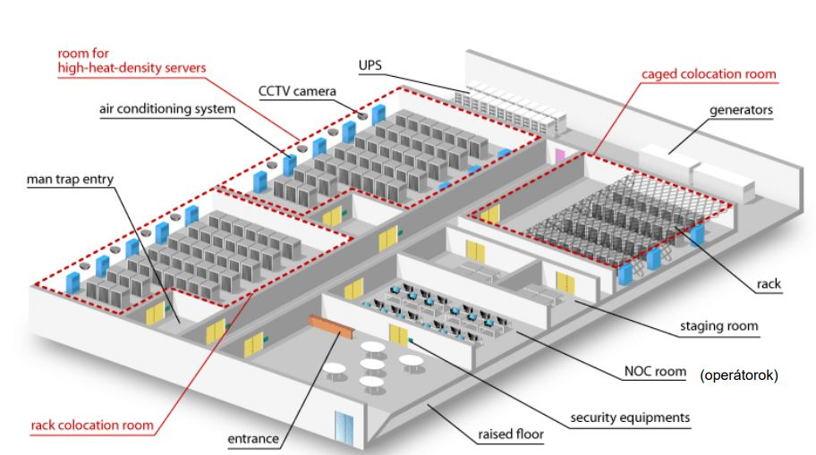

Felhő technológiák beadandó
Kostka Ákos PYHQR2
Tétel
Ismertesse egy adatközpont felépítését és alrendszereit. Milyen megfontolásokat kell tenni egy adatközpont tervezése során? A hálózati területet elegendő csak érinteni.
Adatközpontok definíció
Informatikai és távközlési (ICT – Information and Communication Technology) infrastruktúra biztonságos és hatékony elhelyezését, működtetését szolgáló technológiai rendszereket magában foglaló cél-létesítmény. Vagyis egy olyan épület, vagy épületrész, amelynek elsődleges funkciója, hogy abban szerverterem és annak kiegészítő létesítményei működjenek.
Az adatközpont technológiai alrendszerek együttese, melyek szoros kölcsönhatásban vannak.
Adatközpontok követelményei:
- egyszerűség, rugalmasság, skálázhatóság, modularitás
- magas rendelkezésre állás
- fizikai biztonság és védett környezet
- folyamatosan felügyelt környezeti és üzemi paraméterek
- redundáns technológiák
- biztonságos áramellátás
- megfelelő hőmérséklet biztosítása az ICT eszközök számára
- nagy sávszélességű belső és külső adatkapcsolatok
Egy adatközpont négy alapvető komponensből épül fel: Létesítmény, Támogató infrastruktúra, IT-berendezések, Operatív személyzet
Adatközpontok felépítése:

Az adatközpont meghatározó létesítménye a szerverterem, amelyet az alábbi kiszolgáló helyiségekkel együtt létesítünk
- Colocation Room (COLO) - Közös használatú terem – az ügyfelek ide helyezhetik saját tulajdonú berendezéseiket, melyek működtetését és karbantartását az adatközpont biztosítja (Ketrecek és zárható rack-ek)
- Staging room - Érkeztető terület, a szerver termeken kívüli terület, ahol az eszközök ellenőrző tesztelése, konfigurálása történik
- NOC room – Az operátorok a szerverek, berendezések működésének monitorozását itt végzik
- Szerver terem – megfelelően hűtött helyiség a szervereknek
- Áramellátási helyiség, Akkumulátor helyiség, Gépészeti helyiség – generátorok, akkumulátorok, aggregátorok
Adatközpontok alrendszerei:
- Épület, falak, ajtók, nyílászárók
- Álpadló
- Strukturált kábelhálózat
- Kábelvezetési nyomvonalak
- Rendező szekrények
- Beléptető rendszer
- Vízbetörés jelző rendszer
- Tűzjelző és tűzoltó rendszer
- Monitorting rendszer
- Elektromos betáplálás, generátor
- Szünetmentes áramellátás
- Áramelosztó rendszer
- Hűtő és légkezelő rendszer
- Infrastruktúra menedzsment rendszer
Adatközpontok tervezési szempontjai:
- Földrajzi elhelyezkedés
- Vonatkozó szabvány: 50600-2-1
- Épület jellege/állapota - Új építés vagy használt épület
- Környezeti kockázatok: szeizmikus mozgások, árvíz, légszennyezés, föld alatti terület (stabil alapzat), közbiztonság megfelelő, közművek elérhetősége biztosított, veszélyes üzemek távolsága megfelelő
- Vasút és főközlekedési út min. 800 m távolságban legyen
- Veszélyes üzemektől min. 400 m távolság legyen (repülőtér, vegyi üzem, folyó, tenger, kutató laborok stb.)
- Katonai bázis min. 800 m távolságban legyen
- Nukleáris üzemektől min. 166 m távolságban legyen
- Radarállomás, telefonátjátszó, nagykövetség ne legyen a közelben
- Közmű - Áram, Víz, Csatorna
- Elérhető
- Eltérő források és útvonalak
- Rendelkezésre állás biztosított
- Elérhető kapacitással rendelkeznek
- Épület magasság
- Minimális mennyezeti magasság: 2,6 m az álpadlótól az első mennyezeti elemig (oltófej, világítótest, kamera)
- Ajánlott magasság: 3.1 m az álpadlótól a mennyezetig, 42 U rack magasság esetén
- A rack szekrények fölött az oltófejekig (sprinkler) minimum 460 mm magasságot kell biztosítani
- Padló
- A padlózatnak el kell bírnia a megosztott és a pontszerű terhelést is
- A terhelés számításába az összes terhelést (rackek, ICT eszközök, kábelek, csatornák) figyelembe kell venni
- Aljzat sima, vízszintes, tiszta és pormentes legyen
- Álpadló
- Európai szabvány: EN 12825-2001
- Szükséges-e az álpadló?
- Hűtés lég vagy vízhűtés legyen?
- Álpadló magassága a hűtésnek megfelelő legyen
- Padló vezetőképessége, földelése megfelelő legyen
- Lehetőleg disszipatív vagy vezetőképes legyen a padló
- Szabvány szerint minden 2. vagy 3. lábat földelni kell, EPH rendszerbe be kell kötni
- Teherbírása, rögzítése a padlóelemeknek
- Gyártmány kiválasztása
- Kábelek telepítése, hol fussanak?
- Strukturált kábelezés
- Javaslat: kábelek a szekrény fölött fussanak
- Álpadló alatti terület a hűtésre szolgál
- Az álpadló tartóelemek közötti távolságnak legfeljebb 1200 mm-nek szabad lennie
- Világítás
- Minimum 500 lux a vízszintes felületeken
- Minumum 200 lux a függőleges felületeken
- EMC védelem – Elektromágneses Kompatibilitás
- Zavarforrások elleni védekezés megfelelő legyen
- Zajmentes földelés, szélessávú RFI szűrők, árnyékolás
- Áramellátás
- Energiaszükséglet becslése - Szerverek, komponensek, hűtés, stb.
- Rendelkezésre állás
- Tier1, Tier2, Tier3, Tier4
- UPS tervezési megfontolások – szünetmentes áramellátás tervezése
- Vészhelyzeti áramfejlesztő generátorok méretezése, üzemanyag kezelése az előírásoknak megfelelően
- Géptermen belüli áramelosztás – tokozott áramsínek javasoltak
- Rendezősuekrények áramellátása – PDU alkalmazása
- Hűtés
- Sor hűtés - Hideg-meleg folyosók váltakozva Zárt hideg/meleg folyósó - Gépek lehelyezése milyen legyen
- „In-row” hűtés - nincs emelt padló - rack szekrények elhelyezése fontos
- „In-rack” hűtés – Hőforráshoz közel, szekrénynél közvetlen hő cserélés - Zárt rendszerű hűtés
- „High density” hűtés – Hőforráshoz még közelebb, vagy rásegítéssel
- Ingyen hűtés - Időjárás
- Vízhűtés
- Folyadék hűtés - Asványolaj, Dielektrikus folyadék
- Álpadló alatti kialakítás
- Páratartalom biztosítása – 30-55% között
- Környezetvédelmi szempontok
- Keletkezett hőmennyiség újrahasznosítása
- Tűzvédelem megfelelő kialakítása
- Füstérzékelők, tűzgátló falak, ajtók, gáz-alapú oltóberendezés
- Biztonság
- Beléptető rendszer
- Kamerarendszer
- Biztonsági szolgálat
- Monitoring szoftverek
- Minősítés
- Minősítő szervek előírásainak megfeleljen
Adatközpontok hálózata:
- Nagy rendelkezésre állású hálózat
- megbízható eszközök, redundáns komponenssek
- gyors hálózati hiba érzékelés, redundáns hálózat
- Többszintű, réteges megközelítés
- Hierarchikus hálózat: Core, Distribution, Access
- Hálózat tervezés
- Multi-path routing
- Oversubscription
- Distribution-Access
Források:
- dr. Váradi János - Adatközpontok tervezése 1.
- Tarcsay György - Hogyan építsünk adatközpontot
- BME VIK TMIT – Információs rendszerek üzemeltetése: Adatközpontok fejezet
- BITKOM – Megbízható adatközpontok
- Balku Ferenc - Tíz tanács, amit érdemes megfontolni adatközpontok tervezésekor